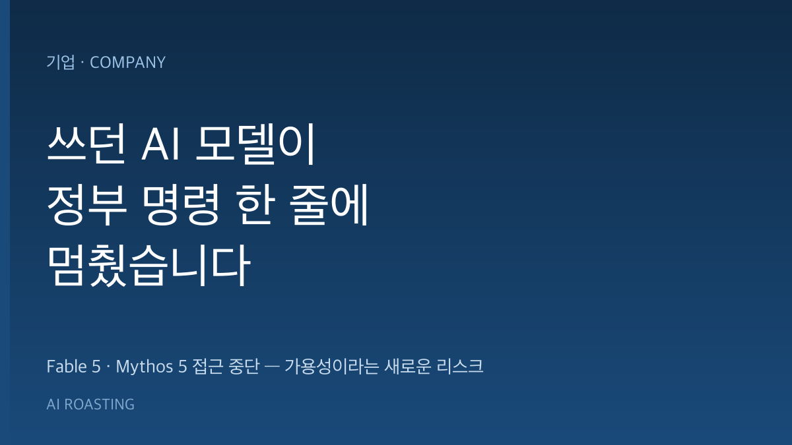

Anthropic이 최상위 모델 Fable 5와 Mythos 5의 접근을 전 세계에서 중단했습니다. 미국 정부의 수출통제 지시 때문입니다. 직원과 외국인을 포함한 모든 사용자가 대상입니다.
정부는 Fable 5의 안전장치를 우회하는 방법이 발견됐다고 봤습니다. Anthropic은 그 기법이 다른 공개 모델도 찾아내는 사소한 취약점이라며 반박했습니다.
핵심은 기술이 아니라 가용성입니다. 기업이 의존하던 프런티어 모델이 벤더가 아닌 정부의 결정으로 멈출 수 있다는 신호입니다.
당신의 업무 절반을 맡긴 AI 모델이 어느 날 아침 정부 명령 한 줄에 사라진다면,
당신에게는 그다음 계획이 있습니까?
2026년 6월 12일, Anthropic이 짧은 성명을 냈습니다. 자사 두 모델의 접근을 전 세계에서 끊었다는 내용입니다. 직원과 외국인을 포함한 모든 사용자가 대상입니다.
이유는 버그도, 서버 장애도 아닙니다. 미국 정부의 수출통제 지시입니다. 국가안보를 근거로 들었습니다.
여기서 멈추면 남의 회사 이야기입니다. 그런데 질문을 바꿔봅니다. 당신의 핵심 업무가 특정 모델 하나에 묶여 있다면, 그 모델이 정부 결정으로 사라질 때 무엇을 준비해 두었습니까. 이 글은 그 위험을 다룹니다.
기업의 AI 도입이 실험을 지나 핵심 업무로 들어왔습니다. 고객 응대, 코드 작성, 문서 분석이 특정 모델 위에서 돌아갑니다.
지금까지 모델 중단 위험은 기술 문제로 여겨졌습니다. 장애, 요금 인상, 성능 저하 정도였습니다. 이번 사건은 다른 층을 열었습니다. 모델 가용성이 규제와 지정학의 영향을 받기 시작했습니다. 한 정부의 판단으로 프런티어 모델이 하룻밤에 멈출 수 있습니다.
첫째, 정부와 Anthropic의 사실 인식이 정면으로 충돌합니다. 정부는 Fable 5의 안전장치를 우회하는 방법이 발견됐고, 이것이 국가안보 위협이라고 봤습니다. Anthropic은 그 기법을 직접 검토했습니다. 그 결과 이미 알려진 사소한 취약점 몇 개를 드러냈을 뿐이라고 밝혔습니다. 다른 공개 모델도 같은 수준을 찾아낸다는 것입니다.
둘째, 문제가 된 '우회'는 사실 기능에 가깝습니다. Anthropic에 따르면 정부에 시연된 기법은 특정 코드베이스를 읽고 소프트웨어 결함을 고치도록 모델에 요청하는 것이었습니다. 코드의 취약점을 찾아 고치는 능력은 개발 현장에서 가치 있는 기능입니다. 같은 능력이 보안 위협으로도, 생산성 도구로도 읽힙니다. 그 경계를 이제 기술이 아니라 규제가 긋습니다.
셋째, 차단 범위가 이례적으로 넓습니다. 외국인뿐 아니라 Anthropic 직원까지, 전 세계 모든 사용자가 대상입니다. 보통 수출통제는 특정 국가나 대상을 겨냥합니다. 이번에는 모델 자체의 접근을 통째로 닫았습니다. 다만 다른 Anthropic 모델은 영향을 받지 않습니다.
넷째, Anthropic은 이 기준이 산업 전체를 멈출 수 있다고 경고합니다. 회사는 이번 결정에 공개적으로 반대했습니다. 같은 기준을 업계 전반에 적용하면 모든 프런티어 모델 제공사의 신규 모델 출시가 사실상 중단될 것이라고 주장했습니다. Anthropic은 시연된 능력이 OpenAI의 GPT-5.5를 포함한 다른 모델에서도 널리 제공된다고 덧붙였습니다.
다섯째, 경영 리더가 읽어야 할 진짜 메시지는 가용성 리스크입니다. 모델 성능 경쟁에 가려져 있던 질문이 드러났습니다. 우리가 의존하는 모델은 우리가 통제하지 못하는 이유로 멈출 수 있습니다. 성능 비교표에는 이 위험이 적히지 않습니다. 그래서 평가 항목에 '이 모델이 내일 막히면 무엇이 멈추는가'를 넣어야 합니다. 단일 모델 종속은 이제 기술 선택이 아니라 사업 연속성 문제입니다.
어떤 핵심 업무가 어떤 모델에 묶여 있는지 한 장에 정리합니다. Claude 프롬프트: "우리 팀이 AI를 쓰는 업무를 나열하고, 각 업무가 어떤 모델과 벤더에 의존하는지, 그 모델이 중단되면 무엇이 멈추는지 표로 정리해줘." (30분, A4 1장)
가장 중요한 업무 1개를 골라 다른 벤더 모델로 같은 프롬프트를 돌립니다. 품질 차이와 전환에 걸린 시간을 기록합니다. 막상 닥쳤을 때의 비용을 미리 압니다. (1시간, 비교 메모 1장)
특정 모델 고유 기능에만 기대지 않도록 호출 부분을 추상화 계층으로 감쌉니다. 모델 교체를 코드 한 줄 수정으로 만듭니다. 오류 비용이 큰 업무부터 적용합니다. (준비 1시간)
이 사건은 한쪽 당사자의 성명에 크게 기댑니다. Anthropic은 분쟁의 당사자입니다. '사소한 취약점'이라는 평가도 회사의 주장입니다. 정부의 상세 근거는 공개되지 않았습니다. 양측 주장을 균형 있게 읽어야 합니다.
과잉 반응도 위험입니다. 멀티 벤더 전략은 비용과 복잡성을 늘립니다. 모든 업무를 이중화할 필요는 없습니다. 오류 비용이 크고 중단 시 손실이 큰 업무부터 우선순위를 둡니다.
규제 환경은 계속 바뀝니다. 이번 차단이 영구적인지 일시적인지 아직 불확실합니다. 단발 사건을 영구 정책으로 단정하면 과도한 투자로 이어집니다. 방향만 읽고, 대응은 단계적으로 합니다.
모델 경쟁의 승부는 성능이지만, 사업의 리스크는 가용성입니다. 가장 강한 모델 하나에 모든 것을 걸지 말고, 멈춰도 사업이 멈추지 않도록 설계해야 합니다.
수출통제 지시: 국가안보나 외교 목적을 이유로 특정 기술과 제품의 수출·제공을 정부가 제한하는 조치입니다. 이번에는 두 AI 모델의 전 세계 접근을 닫는 형태로 적용됐습니다.
프런티어 모델: 현재 기술 수준에서 가장 앞선 성능을 가진 대형 AI 모델입니다. Fable 5와 Mythos 5가 여기에 해당합니다. 성능이 높은 만큼 규제와 안보 논의의 대상이 되기도 합니다.
안전장치와 레드팀: 안전장치는 모델이 위험한 출력을 내지 않도록 막는 장치입니다. 레드팀은 그 장치를 일부러 뚫어보는 공격적 테스트입니다. Anthropic은 수천 시간의 레드팀 테스트를 거쳤고 보편적 우회는 발견되지 않았다고 밝혔습니다.
모델 추상화 계층: 여러 AI 모델을 같은 방식으로 호출하도록 만든 중간 소프트웨어 층입니다. 이 층을 두면 한 모델이 막혀도 다른 모델로 빠르게 갈아탈 수 있습니다.
- Anthropic. (2026, June). Statement on US Government Directive Regarding Fable 5 and Mythos 5 [Statement]. Anthropic. (원문 보기 ↗)